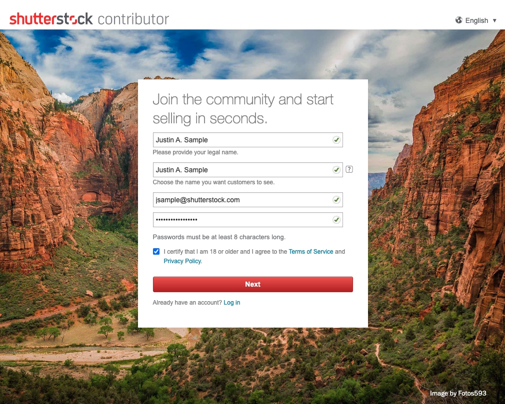
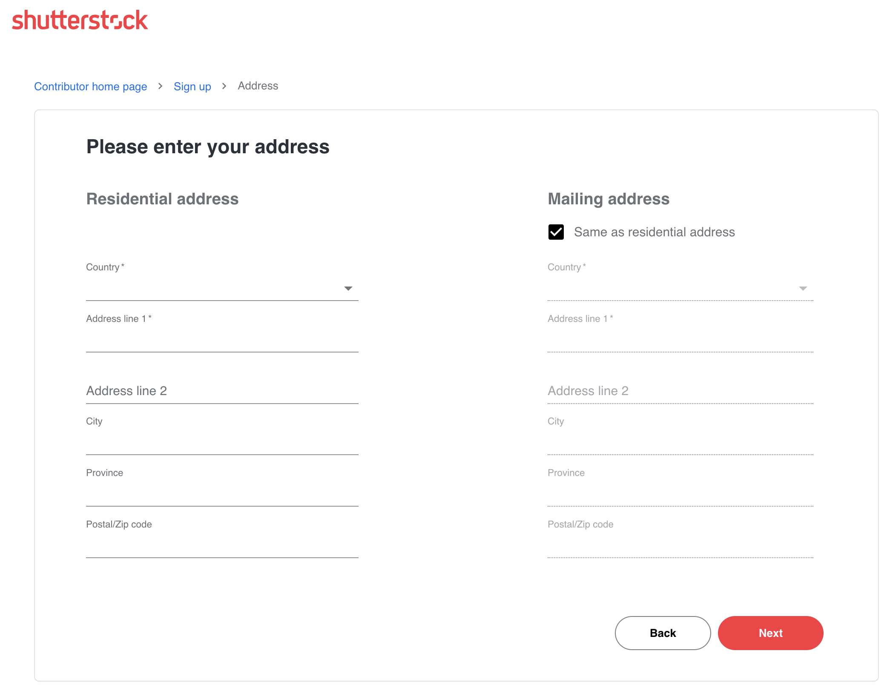

FAQ
Frequently Ask Question
Have
Questions
Menjadi kontributor di Shutterstock itu mudah! Siapa pun yang berusia di atas 18 tahun dapat mendaftar dalam beberapa langkah mudah. Anda akan siap untuk mulai mengirimkan konten dengan cepat.
Untuk mendaftar akun kontributor Shutterstock, daftar di submit.shutterstock.com. Situs ini dirancang khusus untuk kontributor kami. Pelanggan kami harus menggunakan shutterstock.com.
Untuk mendaftar, Anda harus memberikan beberapa informasi pribadi dasar dan memverifikasi email Anda. Anda juga dapat membuat akun penelusuran gratis di situs pelanggan kami, tetapi Anda hanya dapat mengirimkan konten melalui akun kontributor Anda di submit.shutterstock.com.
STEP 1: Berikan Informasi Dasar
Pada halaman pertama, masukkan nama lengkap, nama tampilan, dan alamat email Anda. Nama lengkap Anda harus sesuai dengan nama resmi atau nama bisnis Anda jika Anda mendaftar sebagai bisnis. Nama tampilan Anda adalah nama yang akan ditampilkan secara publik. Kami akan menghubungi Anda melalui alamat email yang terkait dengan akun Anda.
Saat Anda menekan "Berikutnya," kami akan mengirimkan pesan untuk memverifikasi bahwa alamat email yang Anda berikan valid. Ikuti instruksi dalam email tersebut.

LANGKAH 2: Tambahkan alamat Anda
Sekarang Anda siap menjelajahi dasbor akun Anda dan mulai mengunggah konten Anda!
Anda masih harus memasukkan alamat tempat tinggal dan alamat surat jika berbeda. Informasi alamat harus dimasukkan dalam bahasa Inggris saja (huruf beraksen atau karakter khusus tidak diterima

Untuk menjadi kontributor aktif Shutterstock, Anda perlu mengirimkan beberapa foto, jpeg, ilustrasi eps, atau beberapa klip video untuk kiriman pertama Anda yang memenuhi kriteria kiriman kami. Konten yang Anda kirimkan akan ditinjau oleh tim peninjau ahli kami. Ketika konten pertama Anda disetujui, akun Anda akan aktif sepenuhnya, dan Anda dapat mengirimkan file apa pun tanpa batasan. Harap diingat bahwa Anda hanya dapat mengunggah karya Anda sendiri atau konten yang Anda miliki hak ciptanya.
Untuk menjaga keamanan akun Anda, Anda perlu menghubungi kami untuk mengubah atau memperbarui nama Anda melalui email ke submit@shutterstock.com. Lampirkan dokumentasi yang mengonfirmasi nama baru Anda. Dokumen pendukung dapat berupa a:
Jika Anda awalnya mendaftar dengan nama panggilan, Anda juga perlu menghubungi kami agar kami dapat membantu Anda mengubahnya menjadi nama resmi Anda. Jika nama Anda salah ketik, kami akan dengan senang hati memperbaikinya untuk Anda.
Jika Anda ingin mengubah nama di akun Anda menjadi nama orang lain, hal ini akan melibatkan pengalihan hak cipta karya Anda. Pelajari lebih lanjut tentang mentransfer akun Anda ke orang lain di sini.
Setelah kami menerima permintaan Anda beserta dokumentasi pendukungnya, seorang anggota tim Layanan Kontributor akan memperbarui nama yang terkait dengan akun tersebut. Anda akan melihat perubahan tersebut tercermin di bidang "Lakukan pembayaran ke" di pengaturan Akun Anda.
Untuk mengubah "Nama tampilan," nama yang dilihat pelanggan di situs web kami, masuk ke akun kontributor Anda dan klik Profil publik di Akun Anda di pojok kiri bawah. Masukkan nama tampilan baru dan klik Simpan di bagian atas halaman. Anda juga dapat mengubah URL Portofolio Anda, tetapi hanya satu perubahan URL yang diizinkan.
Secara umum, ada tiga faktor utama yang menentukan jumlah yang Anda peroleh dari setiap unduhan. Penghasilan per unduhan bervariasi berdasarkan:
- Jenis paket yang digunakan oleh pelanggan. Paket paling umum yang ditawarkan di situs eCommerce kami adalah langganan tahunan, langganan bulanan tanpa komitmen, dan paket sesuai permintaan dalam berbagai ukuran. Lihat opsi paket gambar dan video pelanggan kami.
- Jenis lisensi yang dibeli: Standar vs. Disempurnakan. Lihat halaman perbandingan lisensi kami untuk gambar dan video untuk detailnya Jenis lisensi yang dibeli: Standar vs. Disempurnakan. Lihat halaman perbandingan lisensi kami untuk gambar dan video untuk detailnya.
- Tingkat penghasilan Anda pada saat mengunduh
Total unduhan dan penghasilan Anda yang dihasilkan dari unduhan berlisensi dan rujukan ditampilkan di bagian atas halaman ringkasan Penghasilan. Anda dapat melihat penghasilan Anda yang disusun berdasarkan bulan atau jenis produk (ini adalah jenis paket yang digunakan oleh pelanggan). Keseluruhan unduhan harian Anda akan muncul di sini dalam waktu satu jam setelah lisensi dibeli oleh pelanggan.
berdasarkan tanggal
Setiap bulan menampilkan satu baris untuk setiap hari yang menghasilkan pendapatan, dengan total harian di setiap kolom. Klik pada tanggal tertentu untuk melihat penghasilan hari itu yang dirinci berdasarkan produk, paket, dan jenis lisensi
berdasarkan Produk
menu ini memungkinkan Anda untuk menganalisis penghasilan yang dihasilkan setiap aset Anda sejak ditambahkan ke portofolio Anda. Penghasilan dari setiap aset dikelompokkan berdasarkan jenis paket yang digunakan untuk mengunduh.
- Subscriptions: Gambar yang dilisensikan melalui salah satu paket langganan bulanan atau tahunan kami.
- On Demand: Gambar yang dilisensikan menggunakan salah satu paket sesuai permintaan kami.
- Enhanced: Gambar yang diunduh dengan pembelian paket lisensi Enhanced.
- Single Other: Pengunduhan gambar tunggal yang dilakukan melalui aplikasi seluler kami dan sebagian besar produk khusus lainnya yang tidak ditawarkan untuk layanan mandiri di platform eCommerce kami. Ini termasuk penawaran dan kemitraan API, paket Enterprise, dan paket khusus lainnya yang disusun oleh Tim Penjualan kami. Perlu diingat bahwa setiap pendapatan yang dihasilkan dari kesepakatan dan kemitraan API kami adalah aliran pendapatan tambahan. Mereka berasal dari pelanggan yang diperoleh di luar platform eCommerce reguler kami.
- Cart Sales: Klip video yang dibeli secara a la carte dan klip yang dilisensikan melalui salah satu paket langganan video kami.
- clip packs: Video yang dilisensikan menggunakan salah satu paket sesuai permintaan kami.
- Enhanced video: Video yang dibeli dengan lisensi video yang disempurnakan.
Pada kesempatan yang jarang terjadi, paket khusus mungkin masuk ke dalam kategori langganan, dan dalam hal ini, penghasilan dari unduhan ini akan muncul di opsi masing-masing. Namun, jumlahnya mungkin terlihat berbeda dari apa yang biasa Anda lihat yang dihasilkan dari paket eDagang standar.
Konten editorial dapat digunakan untuk mengilustrasikan peristiwa yang layak diberitakan dan peristiwa terkini. Konten ini juga dapat digunakan untuk mengilustrasikan subjek yang menarik bagi manusia, termasuk seni, bisnis, budaya, kesehatan dan kebugaran, gaya hidup, acara sosial, teknologi, dan perjalanan. Shutterstock mengklasifikasikan konten editorial ke dalam tiga kategori:
- Konten Editorial Dokumenter: Konten yang mendokumentasikan peristiwa kehidupan nyata yang sebenarnya sebagai catatan faktual. Misalnya, foto parade atau setelah bencana alam.
- Konten Editorial Ilustrasi: Konten yang mengilustrasikan subjek yang menarik perhatian manusia melalui pementasan. Misalnya, bidikan produk alat rumah tangga yang populer atau gambar pementasan orang yang sedang minum minuman dari merek yang mudah dikenali.
- Ilustrasi, Vektor, dan Animasi Editorial: Ilustrasi, vektor, dan animasi yang menggambarkan peristiwa yang layak diberitakan, peristiwa terkini, dan subjek yang menarik perhatian manusia. Misalnya, ilustrasi selebriti atau tokoh masyarakat.